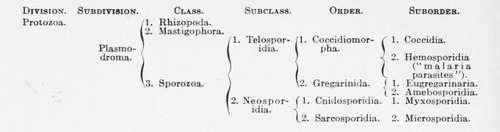
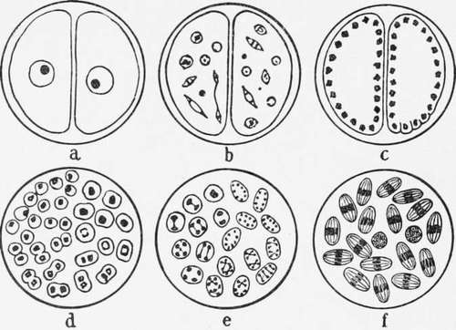

The Mosquito-Malarial Cycle
Description
This section is from the book "Malaria, Influenza And Dengue", by Julius Mennaberg and O. Leichtenstern. Also available from Amazon: Malaria, influenza and dengue.
The Mosquito-Malarial Cycle
Before considering in detail the developmental cycle of malaria parasites in certain mosquitos it will be well to review briefly their zoologic position, for, in the first place, we shall see their relationship to other protozoan parasites, and, secondly, we shall obtain a knowledge of the terminology which is common not only to the malaria parasites, but to other allied parasites, chiefly of epithelial cells, and not of the blood cell. We shall then, when considering the actual development in the mosquito, be in a position to use terms with a definite zoologic meaning rather than the terms first used when experimental discovery had outrun zoologic theory.
The Hemosporidia, under which designation are included the malarial and other blood parasites; together with the Coccidia, which are protozoan parasites of epithelial cells form two suborders of the order Coccidiomorpha, while the nearest allied order to this latter are the Gregarinida, also parasites on epithelial cells. In order to gain a further insight into the relationship of these orders it will be necessary, first, to define briefly the characteristics of the Sporozoa and its subdivisions, and finally of the Hemosporidia and the somewhat heterogeneous assembly that are classified under this heading.
Sporozoa
They are more especially characterized by the property of sporulation, which consists in the formation, from the parent organism, of a number of minute nucleated bodies. These spores are, in the majority of cases, but not always, inclosed in a sheath and characterize the class. Further, the Sporozoa generally exhibit two modes of reproduction: the first serves to increase the number of parasites within the same host, causing, as it is termed, an auto infection; whereas the second method, or that of disseminating the species, produces a new infection. It is the spores that are concerned in this latter process that we have referred to above, and though generally protected by a cyst or sheath, yet the important exception to this statement occurs in the case of the malaria parasites. The protected spores are termed chlamydospores or simply spores, while the unprotected are termed gymno spores. We should note, in passing here, the use of the word spore in a double sense, viz., (1) for the cyst and its contents, and (2) for the contents alone, but to this point we shall return in considering the cycle of a sporozoan parasite.
If we refer to the table, we find that the class Sporozoa is divided into two subclasses,-(1) Telosporidia; (2) Neosporidia,- based upon the following differences:
Telosporidia
Reproduction (sporulation) follows when growth is complete.
Neosporidia
Sporulation proceeds during the process of growth. The Neosporidia do not concern us here more closely; we may, therefore, follow the subdivisions of the Telosporidia, which are divided into two orders:
(1) Coccidiomorpha.-Generally intracellular, reproduction anisog amous-i. e., the male and female cells concerned in the process are microscopically (differentiated) distinguishable.
(2) Gregarinida.-Extracellular during the larger part of their development (intracellular in youngest stages). Reproductive process generally isogamous-i. e., the male and female cells indistinguishable. Finally, the Coccidiomorpha are divided into:
(1) Coccidia.-Parasitic especially on epithelial cells, never on blood cells; they are never ameboid; the spores are inclosed in a sheath.
(2) Hemosporidia-including malaria parasites parasitic on blood corpuscles. The endoglobular forms may be ameboid. The spores are naked.
These, briefly put, are the main differences between the various divisions and subdivisions of the Sporozoce. Further differences and also points of similarity will become apparent when we follow out the life history of the sporozoan parasites. In the life history of these parasites there is, as a rule, a double cycle, the vegetative cycle, cycle of growth, or asexual cycle, and the multiplicative cycle, cycle of reproduction, or sexual cycle. The asexual cycle has also applied to it the terms schizogony, monogony, or trophic or endogenous cycle, while the sexual cycle is also called the cycle of amphigony, sporogony, or reproductive or exogenous cycle. Now, the Gregarinidce differ from the Coccidiomorphce by the fact that in the former the endogenous cycle is exceedingly rare, though it probably exists, whereas in the Coccidiomorpha we have always the two cycles, endogenous and exogenous. It will be simpler, first, to consider, therefore, the cycle in the Gregarinidai.
1. The earliest stage of the gregarine is a small, nucleated body seen occupying the epithelial cell. In this stage it is sometimes called a trophozoite, because it is being nourished by the host cell and is growing in size. It eventually becomes free, and then begins its sexual life. The sexual cells which eventually conjugate are known as gametes, or, as they give rise to gametes, gametocytes. The male is indistinguishable from the female, so the sexual process in this case is termed isogamous, in contradistinction to the anisogamous sporogony, where the male and female gametes are easily distinguished.
2. Two gametocytes (or sporonts) become associated, and, without uniting, become surrounded by an adventitious cyst.
3. Changes next occur in each gametocyte by which the cytoplasm is split up into a number of small nucleated masses or gametes, while a portion of the original protoplasm remains unused as a " residuum," " reliquat," or " Restkorper." These nucleated bodies, the gametes, are also termed sporoblasts.
4. Until now there has been no true conjugation; this next proceeds: each of the gametes conjugates with another, producing a zygote or definitive sporoblast.
5. The sporoblast next becomes encysted in a sheath, so that the sporocyst now contains a spore, lhis term is not uncommonly applied to the whole structure, and not solely to the contents.
Fig. 2.-Showing Conjugation and Spore formation in Gregarines (after Calkins and Minchin). a, Union of two sporonts in a common cyst; b, mitotic division of the nucleus of each sporont; c, commencing formation of gametes; d, formation of sporoblasts; e, division of the nuclei of the sporoblasts; f, cyst with ripe spores, each containing eight sporozoites.
Continue to:
- prev: Malaria In Its Relation To The Mosquito. Historic
- Table of Contents
- next: The Mosquito-Malarial Cycle. Part 2
Tags
mosquito, malaria, influenza, dengue, symptoms, outbreaks, diseases, hemoglobinuria, infections